Understanding and Interpreting Your Network
John R. Ladd | jrladd.com/slides/networkbasics
(use arrow keys or spacebar to navigate)
Basic Parts
Networks are made up of...
Entities (entity = node/vertex/actor)
Relationships (relationship = edge/link/tie)
We'll use "nodes" and "edges"
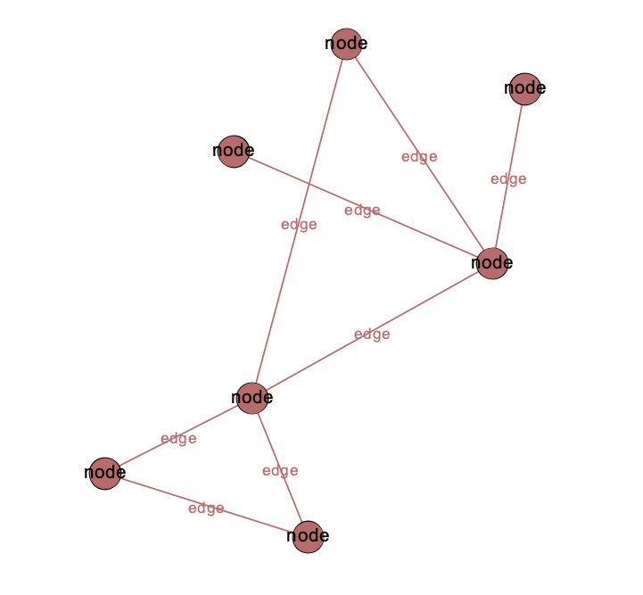
Nodes and Edges have Attributes
Node Attributes
numerical (size)
categorical (color)
Edge Attributes
Directed and Undirected Edges
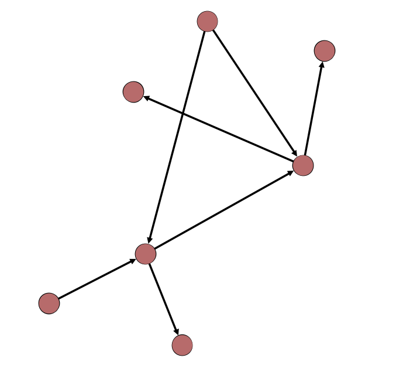
Weighted and Unweighted Edges
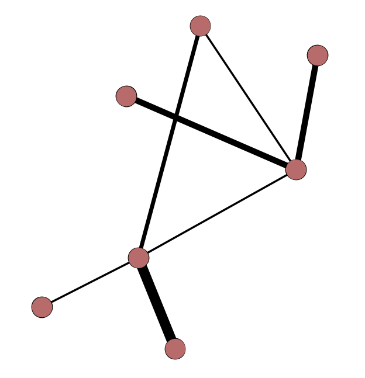
Edge Types
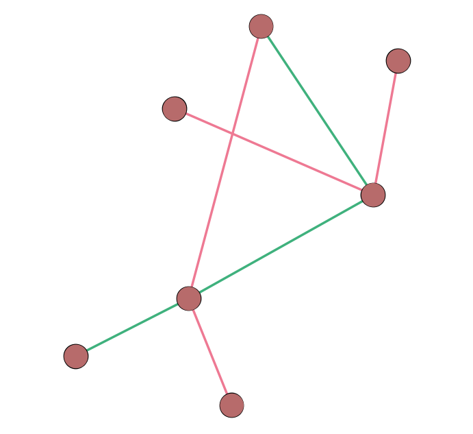
Multiple Edges "in a row" Make a Path
Path & Diameter
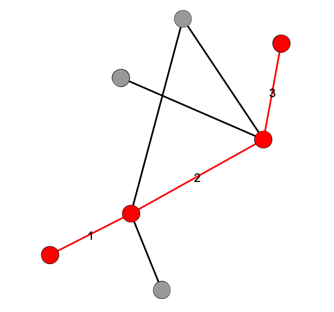
(& Average Shortest Path Length)
Some special kinds of nodes
Isolates
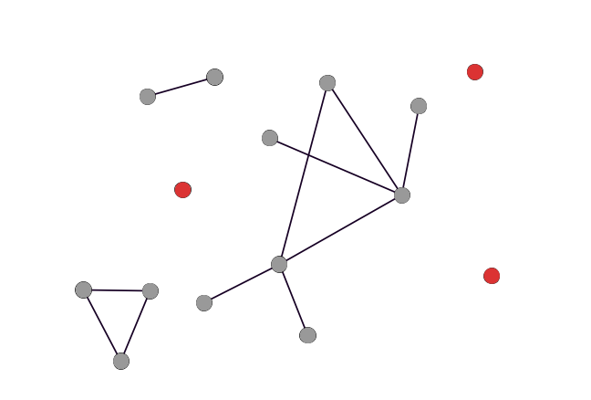
Hubs
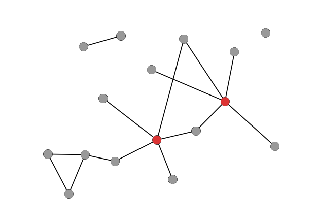
Bridges
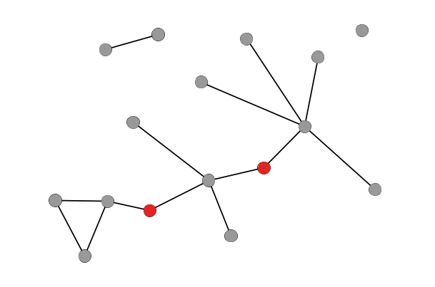
Measuring a node's "importance" with centrality
Degree
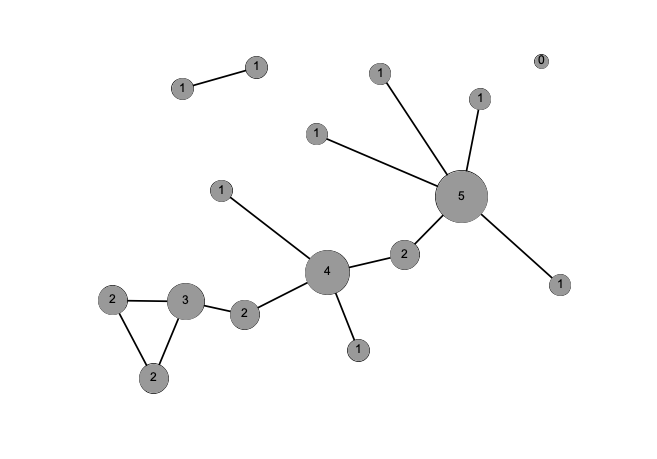
Strength
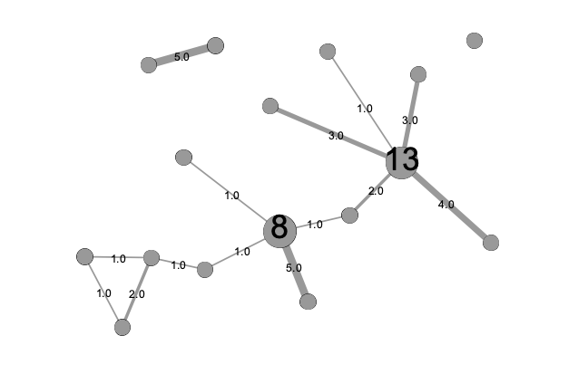
Betweenness
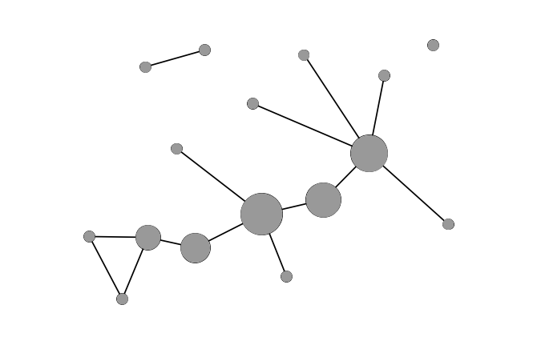
Different kinds of entities or nodes
Unipartite/unimodal
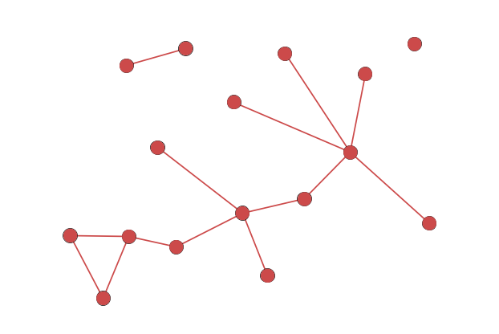
Bipartite/bimodal
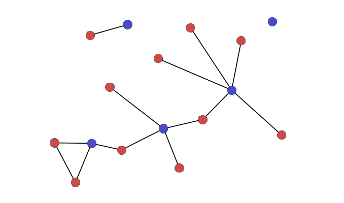
Bipartite (cont.)
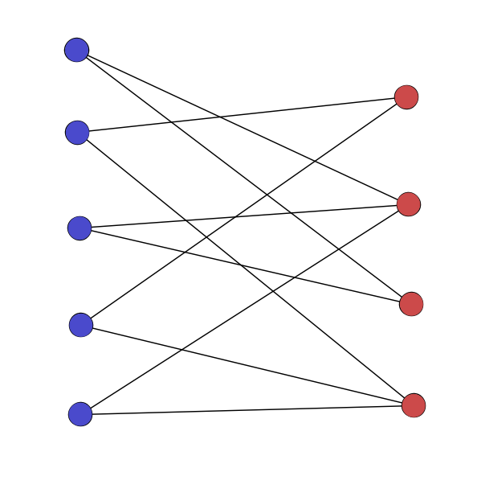
Multipartite/k-partite/multimodal
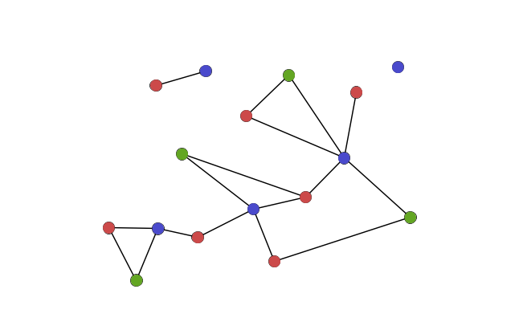
Groups of nodes within a network
Connected components
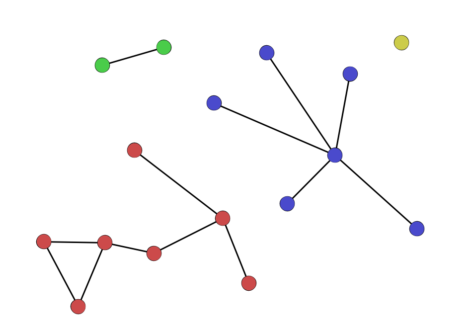
Cliques and clustering
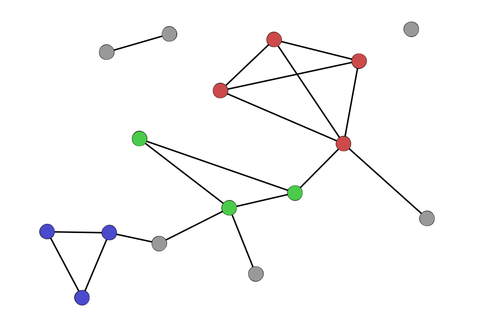
Communities and community detection
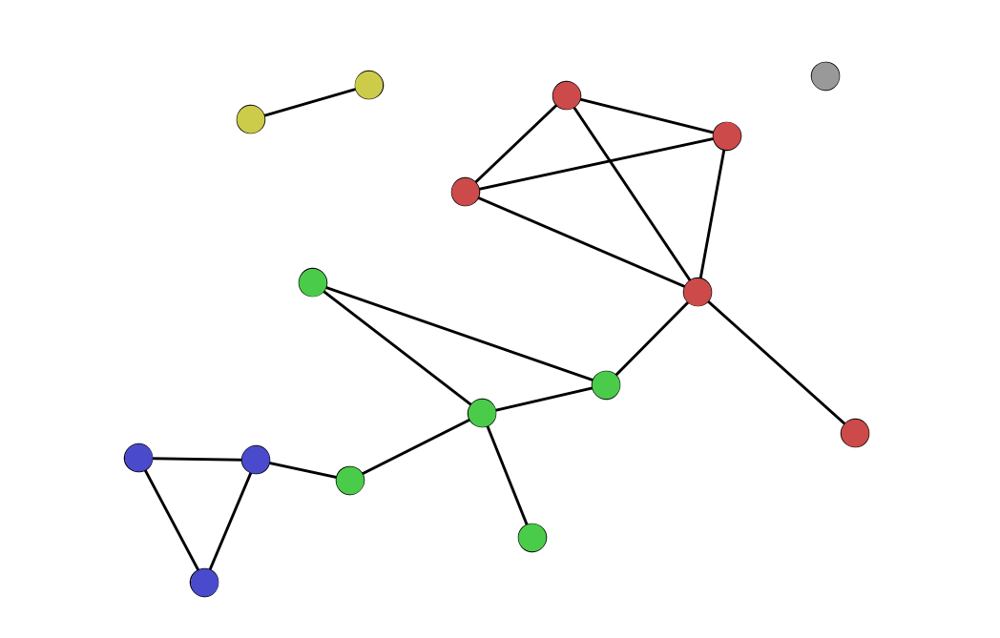
Density
A Sparse Network
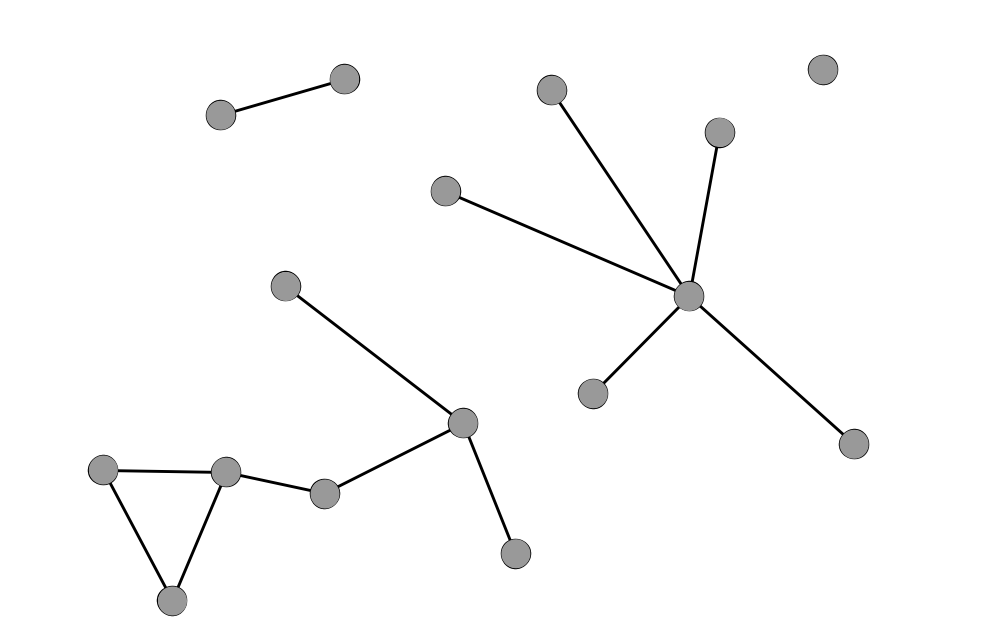
A Dense Network
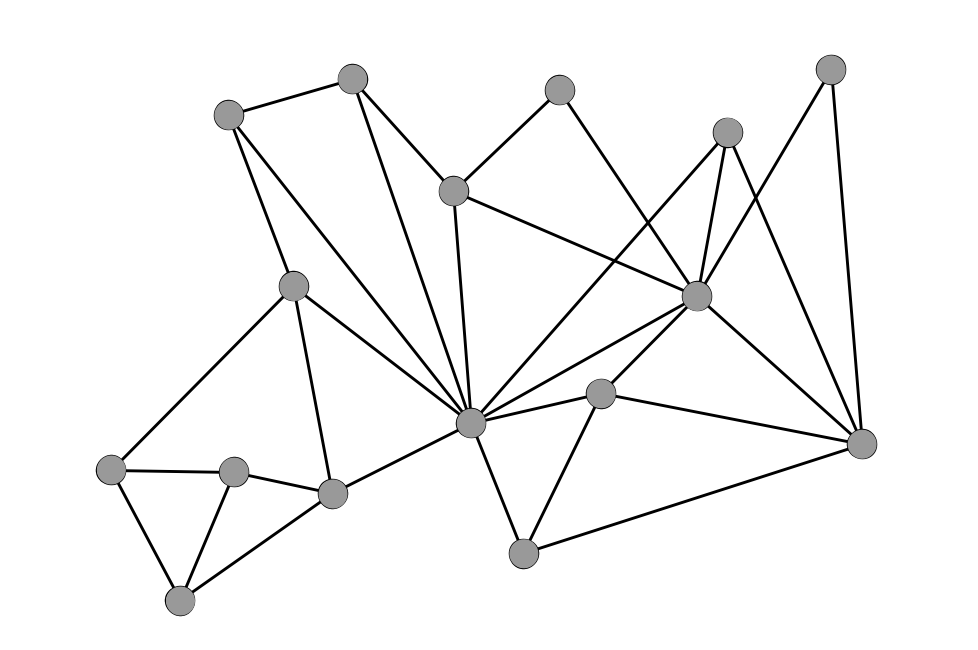
There are many ways to visualize a network
Adjacency Matrix
Tilman Piesk, via Wikipedia
Adjacency List
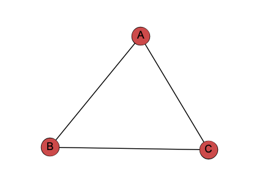
A adjacent to B,C
B adjacent to A,C
C adjacent to A,B
Node-Link Diagram
Other Important Concepts
Small World Network
Triadic Closure
Assortative mixing/Homophily
Preferential Attachment
Weak Ties